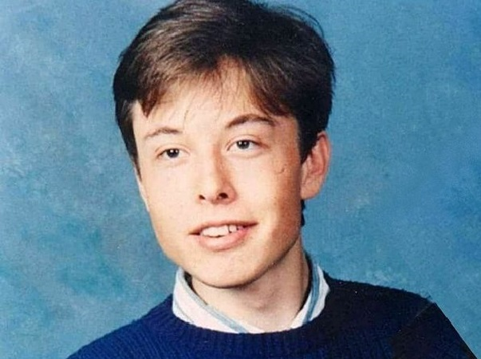
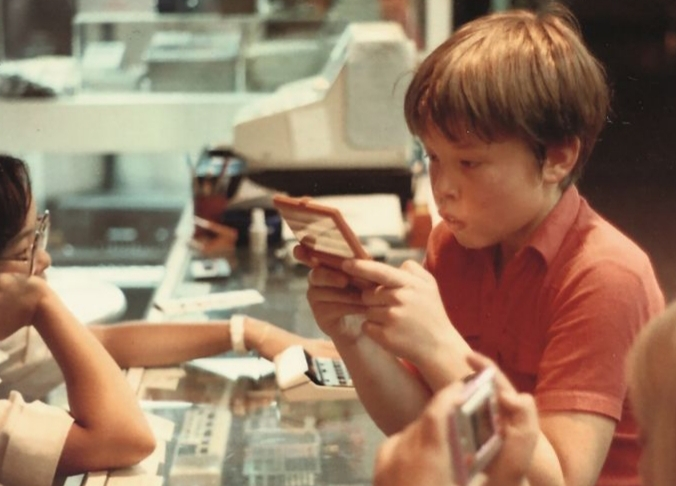
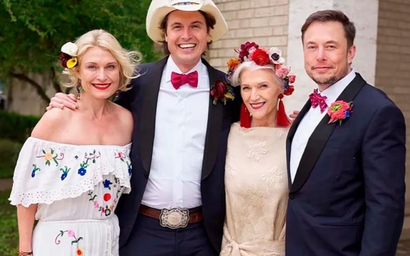

Elon Musk é um empresário e empresário americano nascido na África do Sul que fundou a X.com em 1999 (que mais tarde se tornou PayPal), a SpaceX em 2002 e a Tesla Motors em 2003. Musk tornou-se multimilionário com quase 20 anos quando vendeu sua start-up empresa, Zip2, para uma divisão da Compaq Computers.
Musk ganhou as manchetes em maio de 2012, quando a SpaceX lançou um foguete que enviaria o primeiro veículo comercial à Estação Espacial Internacional. Ele reforçou o seu portfólio com a compra da SolarCity em 2016 e consolidou a sua posição como líder da indústria ao assumir um papel consultivo nos primeiros dias da administração do presidente Donald Trump .
Em janeiro de 2021, Musk supostamente ultrapassou Jeff Bezos como o homem mais rico do mundo.
Musk nasceu em 28 de junho de 1971, em Pretória, África do Sul. Quando criança, Musk estava tão perdido em devaneios sobre invenções que seus pais e médicos solicitaram um exame para verificar sua audição.
Mais ou menos na época do divórcio de seus pais, quando tinha 10 anos, Musk desenvolveu um interesse por computadores e aprendeu a programar sozinho.
Aos 12 anos, desenvolveu um jogo no estilo navezinha com temática espacial após ter aprendido a programar sozinho. Apesar de ser um joguinho muito simples pros dias de hoje, vale ressaltar que ele estava na década de 90 e tinha apenas 12 anos. Mais supreendente ainda foi ter monetizado seu serviço, conseguiu vender o jogo por US$ 500 para a revista PC and Office Technology. Você pode jogar Blastar neste site.
Na escola primária, Musk era baixo, introvertido e estudioso. Ele sofreu bullying até os 15 anos e passou por um surto de crescimento e aprendeu a se defender com caratê e luta livre.
A mãe de Musk, Maye Musk , é uma modelo canadense e a mulher mais velha a estrelar uma campanha da Covergirl. Quando Musk era criança, ela trabalhou em cinco empregos para sustentar sua família.
O pai de Musk, Errol Musk, é um rico engenheiro sul-africano. Musk passou a primeira infância com seu irmão Kimbal e sua irmã Tosca na África do Sul. Seus pais se divorciaram quando ele tinha 10 anos.
Musk foi casado duas vezes. Ele se casou com Justine Wilson em 2000 e o casal teve seis filhos. Em 2002, seu primeiro filho morreu com 10 semanas de idade devido à síndrome da morte súbita infantil (SMSL). Musk e Wilson tiveram mais cinco filhos juntos: os gêmeos Griffin e Xavier (nascidos em 2004) e os trigêmeos Kai, Saxon e Damian (nascidos em 2006).
Após um divórcio contencioso de Wilson, Musk conheceu a atriz Talulah Riley. O casal se casou em 2010. Eles se separaram em 2012, mas se casaram novamente em 2013. O relacionamento deles terminou em divórcio em 2016